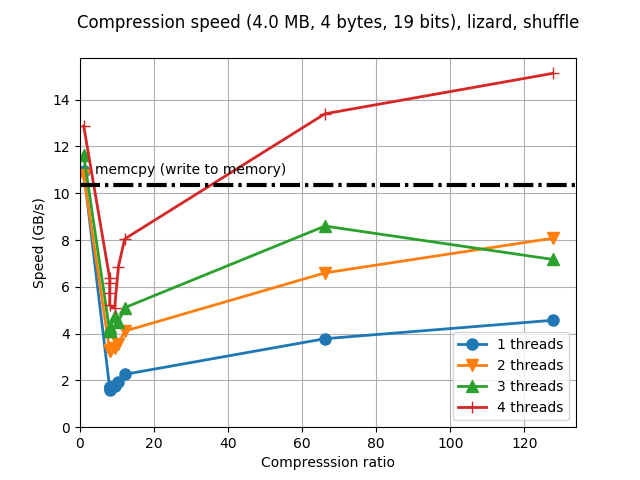
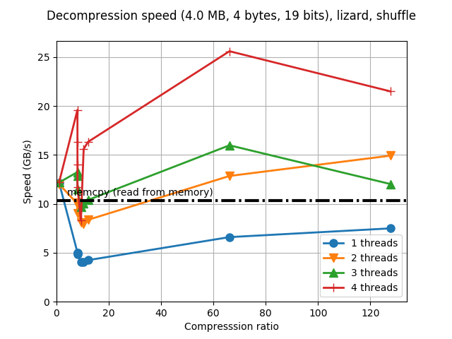
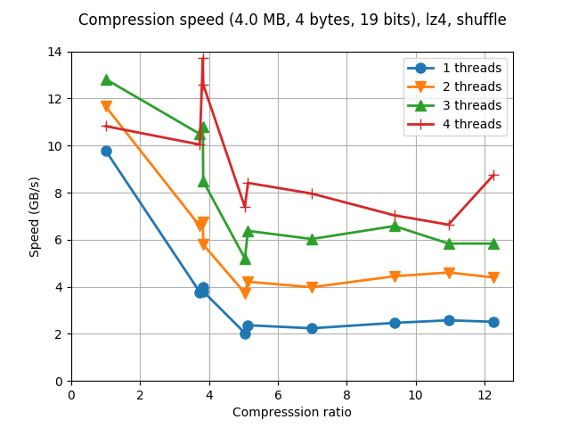
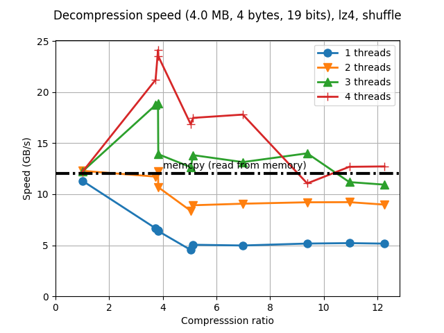
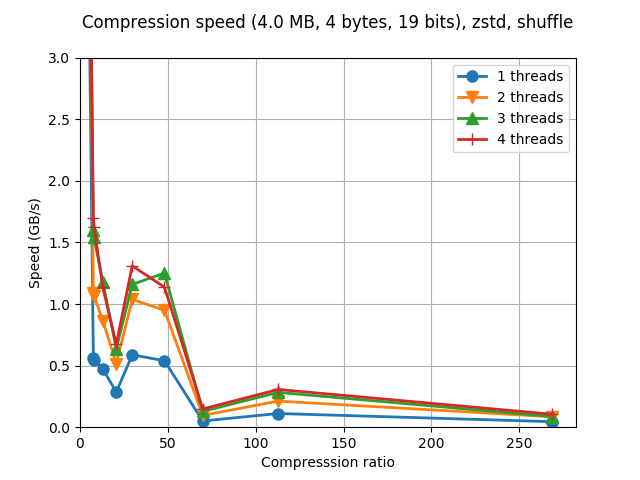
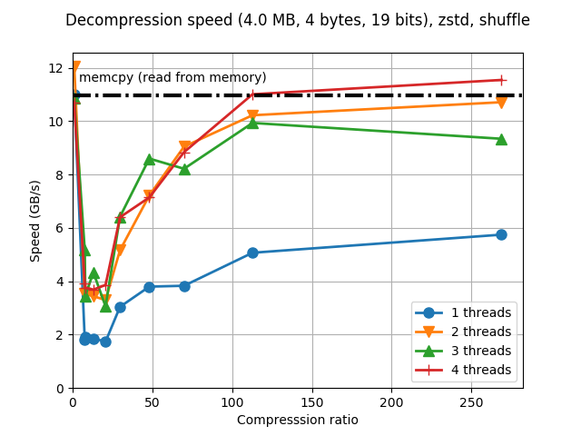

The Lizard Codec
The past weekend I was putting some time in integrating one of the codecs that I was lately more curious about (specially since the release of its 1.0 version some months ago). I am talking about Lizard, a direct derivative of the LZ4 codec and whose author is Przemyslaw Skibinski. One should remark that Przemyslaw is not new in the compression arena as he has helped Yann Collet quite a lot during the Zstandard development, and also he is the author of lzbench, a nice and comprehensive in-memory benchmark of a series of open-source LZ77/LZSS/LZMA compressors.
The reason why I was thinking that Lizard was an interesting codec for Blosc is because it mixes some interesting optimizations of the LZ4 codec and, optionally, it can use them in combination with the Huffman coding by selecting different compression levels (currently from 10 to 49).
After the initial support for Lizard in Blosc, it took me some time to determine a decent map between the compression levels in Blosc (1-9) to the ones in Lizard (10-49), mainly for allowing fast compression and decompression (what Blosc is all about). During the way, I discovered that the most interesting compression levels in Lizard have been 10, 20 and 41. This was indeed determined using the synthetic benchamrk that comes with Blosc, but that is the usual path that gaves me quite good estimates for a first calibration (we are working on a more complete tuner that can adapt to actual data in real time, but I'll blog about it in another occasion).
A new star has born
After the calibration was done the results of the new codec are really surprising:
 |
 |
The interesting part of Lizard can be seen when large compression levels for Blosc are used, specially 8 and 9. Those are mapped to compression level 41 in Lizard, which means that the LIZv1 + Huffman compression method is used. Following the documentation, this matches the compression levels of Zlib and Zstd/Brotli, and it shows.
Just for reference, here it is the performance of the LZ4 codec, from which Lizard inherits a good part of its code:
 |
 |
And here the performance of Zstd, which also uses Huffman coding:
 |
 |
So, while Lizard (or at least, the current mapping that I did for it inside Blosc) in low compression levels cannot beat the speed of LZ4 or the compression ratios of Zstd, for high compression levels it clearly beats LZ4 and Zstd speed both for compression and decompression. Most specially, it works extremely well for achieving pretty reasonable compression ratios (typically better than Zlib, albeit not as good as Zstd) at very good decompression speed and exceptional compression speed (compressing at more than the memcpy() speed, at very good ratios, oh really?).
Finally, for those wondering why I have not used the LIZv1 + Huffman compression method also for the lower compression levels in Blosc, the answer is that I obviously tried that, but for some reason, this method only performs well for large buffers, whereas for small buffers (like the ones created by low compression levels in Blosc) its performance is rather poor. I was kind of getting a similar behaviour with Zstd, where performance shines for decompressing large buffers (the difference is that Lizard can compress at tremendous speed when compared with Zstd in this scenario), so I suppose this is typical when Huffman methods are used.
Finding its place among Blosc codecs
In my previous blog, I was saying that Zstd has virtually no competitor in Write Once Read Multiple scenarios. However, I think there is still a niche for codecs that, without providing the extreme compression ratios of Zstd, they still show big enough compression muscle without loosing too much compression speed. IMO, this is a good description of how Lizard performs. However, in Blosc1 we only have slots for a couple of codecs more (but that will not be a problem for Blosc2, where much more codecs will be supported), and although I am pretty enthusiastic on adding Lizard it would be nice to gather users feedback before than that. So in case you are a Blosc user, please use the lizard branch of the C-Blosc repo (UPDATE: Lizard has been merged into the C-Blosc2 repo recently) and report back your results.
Appendix: Hardware and software used
For reference, here it is the configuration that I used for producing the plots in this blog entry.
CPU: Intel Xeon E3-1245 v5 @ 3.50GHz (4 physical cores with hyper-threading)
OS: Ubuntu 16.04
Compiler: GCC 6.3.0
C-Blosc2: 2.0.0a4.dev (2017-07-29, lizard branch)
Lizard: 1.0.0
Comments
Comments powered by Disqus